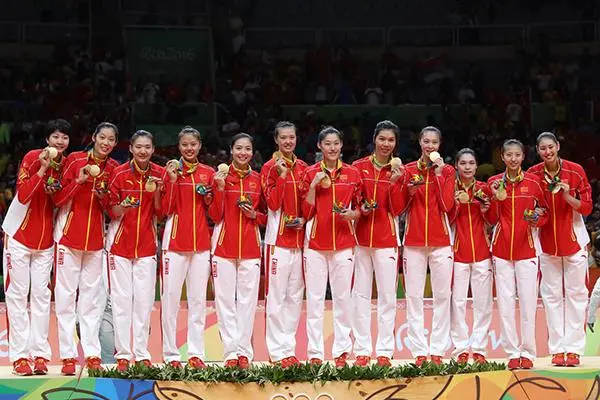
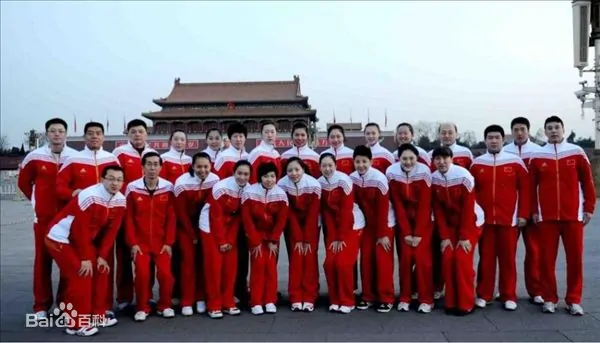
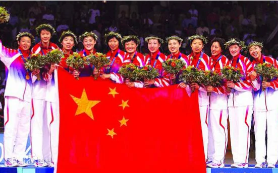
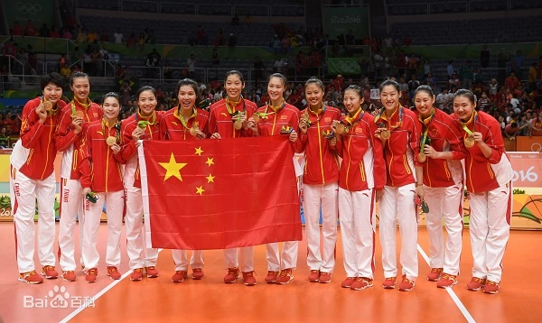

国内排球
中国国家女子排球队（简称中国女排）隶属于中国排球协会，是中国各体育团队中成绩突出的体育团队之一。曾在1981年和1985年世界杯、1982年和1986年世锦赛、1984年洛杉矶奥运会上夺得冠军，成为世界上第一个“五连冠”，并又在2003年世界杯、2004年奥运会、2015年世界杯、2016年奥运会、2019年世界杯五度夺冠，共十度成为世界冠军（包括世界杯、世锦赛和奥运会三大赛）。中国女排是中国三大球中唯一一个拿到冠军奖杯的队伍。
中国国家女子排球队（简称中国女排）隶属于中国排球协会，是中国各体育团队中成绩突出的体育团队之一。曾在1981年和1985年世界杯、1982年和1986年世锦赛、1984年洛杉矶奥运会上夺得冠军，成为世界上第一个“五连冠”，并又在2003年世界杯、2004年奥运会、2015年世界杯、2016年奥运会、2019年世界杯五度夺冠，共十度成为世界冠军（包括世界杯、世锦赛和奥运会三大赛）。中国女排是中国三大球中唯一一个拿到冠军奖杯的队伍。
20世纪50年代即建国初，那时排球强国是苏联和其他东欧国家，而当年的国际比赛主要是6人排球，9人排球为主流的中国，便需要重新学习6人排球的规则、战略和比赛方法。中华全国体育会便积极安排男女排球运动员到东欧等地参加排球比赛，藉以吸收经验，经过一系列的友谊赛，中国男女排球运动员开始掌握6人排球的比赛方法
1953年，中国排球协会正式成立，张之槐先生出任主席，更在1954年成为国际排球联合会（FIVB）的正式会员。其后，中国排球协会（以下简称中国排协）获发邀请参加1956年在法国举行的世界排球锦标赛（男子第三届、女子第二届）。
1956年女队在参加在法国举行的第二届世界女子排球 锦标赛，比赛中，中国女排先后击败奥地利、荷兰和联邦德国等女排队伍，获得第6名。
60年代，一股亚洲女排新势力正挑战着苏联女排的皇者地位，这股势力就是有“东洋魔女”之称的日本国家女子排球队，“东洋魔女”由大松博文的教导下，在1960年的第三届世界女子排球锦标赛中，仅败于卫冕的苏联女排夺得亚军，却接连在的两年后的第四届世界女排锦标赛和四年后的1964年东京奥运会的决赛中击败该宿敌夺标，日本女排更在1960年后曾创下118场国际赛连胜纪录，震惊世界。“东洋魔女”的成功亦引起中国排球界的注意，于是中国排协经过周恩来总理的批准，在1965年4月邀请了大松博文来华一个月，协助训练中国女排，令中国女排得到较有系统的训练和明确的发展方针。1974年，中国女排在第七届世界女子排球锦标赛中，获第14名。及至1976年，新的中国女排国家队正式成立，袁伟民成为了中国女排的主教练。
中国女排终于在1979年的亚洲女排锦标赛中有所突破，在 决赛以盘数3-1击败当时的亚洲和前世界冠军日本女排，首次称霸亚洲。
中国女排在袁伟民的指导下，在80年代开始腾飞。1981年，第三届世界杯在日本举行，比赛采用单循环制，经过了7轮28场比赛，中国女排以7战全胜姿态，压倒卫冕的主办国日本，获得冠军，成为中国三大球﹙足球、篮球、排球﹚中的首个世界冠军。
1982年，中国女排参加在秘鲁举行的第九届世界女子排球锦标赛，初赛对美国队曾以盘数0-3落败，主教练袁伟民果断起用年轻队员梁艳、郑美珠，结果中国女排以3-0轻取古巴，赢得了扭转战局的关键一役。中国女排在决赛以直落三局轻取主办国秘鲁，首次获得世界女排锦标赛冠军 。
尽管在1983年的亚洲锦标赛决赛败于日本，进入调整期的中国女排仍是洛杉矶奥运会的夺标热门。1984年，中国女排参加在洛杉矶举行的1984年洛杉矶奥运会，虽然中国女排又在分组赛被宿敌美国队击败，其后却越战越勇，最终，中国女排在决赛以直落三局轻取主办国美国，报却分组赛一败之仇，并首次获得奥运金牌，同时亦成为女子排球三连冠。
1985、1986两年之间，中国女排又获得了1985年第四届世界杯冠军和1986年第十届世界女排锦标赛冠军，成就世界女排史上首个五连冠的佳绩。
1980年代初的中国，正是百废待兴，女排以拼搏精神赢得三连冠和五连冠的成绩，中国女排成为了当时中国人的模范和骄傲，更是中国在80年代腾飞的象征。
中国女排自1986年在捷克斯洛伐克夺得第十届世界女排锦标赛冠军后，开始青黄不接，早一辈的名将如郎平和梁艳等早已相继退役，1988年的汉城奥运会半决赛中败于该届冠军苏联女排，最后只获得铜牌。中国女排在1989年的第五届世界杯和1990年的第十一届世界女排锦标赛均卫冕失败，决赛分别负于古巴和苏联而获得亚军。
在1992年巴塞罗那奥运会上，巫丹的禁药事件让胡进所带领的中国女排只获得第7名。
1995年，前女排球员——郎平被中国排协聘为中国女排主教练，她率领中国女排走出历史低谷，获得1996年亚特兰大奥运会银牌和第十三届世界女排锦标赛亚军，但她始终未能带领球队重夺得世界冠军，故她于1998年宣布辞职。
在90年代，中国女排虽然出现了不少优秀球员，如 副攻的赖亚文、主攻的许新、接应二传的邱爱华等，却只曾在1990年至1998年期间的四次三大女排世界冠军赛事中屈居亚军，那年代 正值古巴国家女子排球队创造了八连冠的超强王朝。
2000年，在教练胡进带领下，中国女排在2000年悉尼奥运会上止步八强。中国女排兵败后，中国排协便委任在中国女排队中曾担任20多年陪练员的陈忠和先生担任主教练。
2001年，陈忠和决心重用新人，除了逐步淘汰上一代女排名将，更提拔了不少潜质新人如刘亚男、冯坤、周苏红、杨昊、赵蕊蕊等。中国女排在陈忠和教练的带领下，在日本夺得2001年女排大冠军杯赛的冠军，这是中国女排十多年来夺得的世界级正式大赛冠军。不过由于世界大冠军杯属洲际杯性质，传统地位难与三大女排世界冠军赛事相提并论，故在国内没有造成太大回响。中国女排接连在2001年和2002年的世界女排大奖赛决赛周进入最后决赛，分别败于美国队和俄罗斯队而无缘冠军。
2002年，在德国举行的第十四届世界女子排球锦标赛中，中国女排利用走线策略，在两轮分组赛中分别输给实力明显较自己弱的希腊女排和韩国女排，以确保在赛事中尽量避开两大劲敌：意大利女排和俄罗斯女排。最终虽然中国女排达到了赛前所期望的前四位成绩，但却受了国内（不满女排打假的观众）和国外（巴西女排和荷兰女排）一片指责，陈忠和教练一度受到下台压力。不过在之后举行的2002年釜山亚运会中，中国女排获得冠军，陈忠和教练地位得以确保。
2003年，是中国女排丰收的一年，接连夺得瑞士女排精英赛、世界女排大奖赛、亚洲女排锦标赛等几个国际赛事冠军，开始憧憬中国女排可以重夺世界冠军，终于在11月于日本举行的第九届女排世界杯中，中国女排以11战全胜的姿态勇夺冠军，一扫17年之痒。中国国内又重现20世纪80年代的女排热潮，女排精神一词又再度被提起。中国女排在这一年因此夺得中国最佳体育团队奖，其中中央电视台亦制作特备节目走过17年以庆祝中国女排重夺世界冠军。
2004年雅典奥运会，中国女排成为夺冠热门，可重夺失落了20年的奥运金牌。但事实上，中国女排赛前的状态并没有在2003年时那样大熟大勇，身高1.97米、为中国女排夺得2003年世界杯的主力功臣赵蕊蕊因在一次练习中受伤而缺阵了半年，中国女排亦在较早前的世界女排大奖赛宣告卫冕失败。奥运会女排赛首战对美国女排中，赵蕊蕊便因右脚伤退出比赛，更令中国女排夺冠之路蒙上阴影。不过中国女排在其后比赛中却越战越勇，最后杀入了决赛，对手正是在2003年世界杯未能参赛的俄罗斯女排，中国女排在首两盘比赛中落后，但最终惊天逆转以3-2（28-30，25-27，25-20，25-23，15-12）战胜对手，在奥运女排赛事中折桂，并实现女排两连冠。
2005年，中国女排延续了2004年良好的竞技状态，在亚洲女排锦标赛中卫冕成功，并获得了同年在日本举行的大冠军杯的赛事。但这次的大冠军杯，中国女排未能卫冕成功，只夺得了第三名。2006年，随着冯坤、杨昊等老队员的伤病增加，中国女排的成绩出现了下滑的迹象，仅仅在同年的女排世锦赛上取得第五名，连最终的四强名额都未能挤进。
2007年，因为2008年奥运会在北京举办，作为东道主的中国女排自动获得奥运入场券，所以中国女排听取了国际排联的意见，未参加2007年的女排世界杯。2008年。随着北京奥运会的日益临近，队中的赵蕊蕊、张娜和冯坤等球员的伤愈回归，使得中国女排的整体实力得到明显的上升，但是在半决赛中依旧不敌如日中天的巴西女排，最终中国女排在北京奥运会中取得季军。
2009年3月，陈忠和结束了8年的国家队教练生涯，并由国青队的蔡斌执教。6月，新一届的中国女排在中国国内举行的中国国际女排精英赛漯河站和昆山站上连获两个冠军，为新女排的出征世界大赛打响头炮。其后在2009年度的世界女排大奖赛的三站分站赛上，这支年轻的队伍以9战7胜2负的成绩（于澳门站2-3负于巴西女排；在香港站2-3负于波兰女排）获得在日本举行的世界女排大奖赛总决赛的资格。9月13日，蔡斌率领中国女排国家队在亚锦赛上“荣获”亚军（决赛输给泰国）创造了记录，蔡斌因此被中国排管中心取消了主教练一职。
2010年3月25日，原天津队主教练王宝泉接替蔡斌出任中国女排主教练。6月13日，率领中国队获得瑞士女排精英赛冠军。9月2日，王宝泉因身体原因下课，成了历史上时间最短的教练。排管中心正式宣布任命俞觉敏出任中国女排主教练，带领中国女排夺得广州亚运会冠军和女排亚洲杯冠军。
2011年，俞觉敏带领中国女排夺得瑞士女排精英赛季军、俄罗斯女排总统杯冠军（亚军：巴西，季军：俄罗斯），带领中国女排夺得亚洲女子排球锦标赛冠军，在世界杯上率中国女排收官战中直落三局横扫欧洲亚军德国以11战8胜3负积26分的成绩斩获季军，获得2012年伦敦奥运会的入场券。
2012年，俞觉敏带领中国女排在6月底举行的世界女排大奖赛总决赛中，以1胜4负的成绩排名第五，分别以1-3负于巴西；1-3负于土耳其；2-3负于泰国；0-3负于美国。2012年伦敦奥运会上，中国女排深陷所谓的“死亡之组”，同组对手有北京奥运会冠亚军巴西队和美国队，另外还有欧洲区预选赛冠军土耳其队，新科欧锦赛冠军塞尔维亚队，最后还有亚洲老对手韩国队。然而中国女排分别以3-1战胜塞尔维亚和土耳其，虽然0-3完败美国、2-3憾负巴西，但 3-2险胜韩国。最终以三胜两负的战绩排名小组第二，成功从“死亡之组”中杀出重围晋级八强。然而，到了1/4决赛，中国女排却 意外输给了在奥运赛场上从未输过的日本队，无缘四强，最终并列第五。2012年9月16日，第三 届女排亚洲杯中，中国队在决赛中苦战四局以1-3不敌泰国女排卫冕失利。
2013年5月，郎平正式挂帅，再次执教中国女排。2013年8月11日，获得2013年世界女排大奖赛香港站冠军。2013年9月1日，获得2013年世界女排大奖赛总决赛亚军。2013年9月13日，女排亚锦赛展开首轮争夺，卫冕冠军中国女排轻松以3-0（25-11、25-16、25-17）的大比分零封伊朗，取得开门红。9月14日，中国女排迎来小组第二个对手印度，并以3-0取胜。在随后的比赛中，中国女排相继以3-0的相同比分战胜菲律宾、中华台北、韩国、越南杀入半决赛。可惜在半决赛和争夺三四名的比赛中以2-3负于泰国无缘决赛，2-3负于韩国无缘奖牌。使得中国女排仅列第四，首次在亚锦赛无缘三甲，这一成绩也是中国队征战该项赛事38年来的最差战绩。
2014年9月12日，第四届女排亚洲杯在深圳大运中心体育馆落下帷幕，由徐建德挂帅的中国女排二队直落三局以3-0零封韩国，改写战绩为六战全胜不丢一局，继2008和2010年之后第三度夺魁。但在2014年10月2日的仁川亚运会女排决赛中，中国女排二队0-3不敌韩国队，未能实现亚运会“五连冠”。
2014年10月12日，在世界女子排球锦标赛半决赛中，中国队面对东道主意大利女排，激战四局后以3-1（25-21、25-20、20-25、30-28）胜出，继1998年后再次杀进决赛。在中国三大球集体低迷时，郎平带领着年轻的女排姑娘又一次闯入了世锦赛女排决赛。10月13日，在女排世锦赛决赛中，中国女排以1-3不敌美国，屈居亚军。不过，这是中国女排自1998年后，在世锦赛取得的最佳战绩。
2015年5月28日，在女排亚锦赛决赛中，中国队以3-0（25-21、25-21、25-21）战胜韩国队，时隔4年重回亚洲巅峰，同时也是中国队历史上第13次获得亚锦赛冠军。2015年9月6日，中国女排在2015年世界杯赛中以3-1战胜日本女排，自雅典奥运会夺冠时隔11年后，第一次拿到世界排球三大赛的冠军，这也是郎平作为主教练所得到的第一个世界冠军，同时赢得2016年里约热内卢奥运会参赛资格。
2016年6月，由安家杰带队的中国女排夺得瑞士女排精英赛冠军。自1998年更名为精英赛后，此次是中国队第5次登顶，时隔6年再获冠军，也是球队里约奥运周期在该赛事的最佳战绩。
2016年8月17日，在2016年里约热内卢奥运会女排1/4决赛中，中国女排3-2力克卫冕冠军、东道主巴西女排锁定4强最后1席（五局比分为15-25、25-23、25-22、22-25、15-13），巴西女排无缘奥运3连冠，中国女排时隔8年后再度打入奥运半决赛。8月19日，里约奥运会女排半决赛中，中国女排3-1（27-25、23-25、29-27、25-23）战胜荷兰女排，报了小组赛不敌对手的一箭之仇，时隔12年再次挺进奥运会决赛。8月21日，里约奥运会女排决赛，中国女排在先失一局的情况下连扳三局，以3-1逆转战胜塞尔维亚女排，这是中国女排时隔12年再次获得奥运冠军，也是第三次获得奥运会金牌。9月20日，在第5届女排亚洲杯中，中国女排二队在决赛直落三局以3-0复仇哈萨克斯坦成功卫冕，并且继2008年、2010年和2014年后荣膺第4冠。
